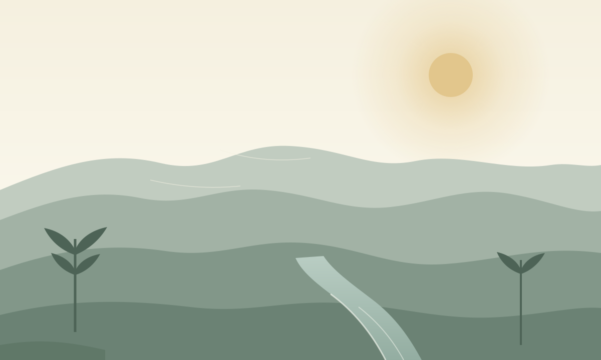

山里的时间不是钟表给的，是光给的。天光从纸背透出来，先染亮窗边的桌面，再慢慢移到书页上。读一页，光就挪一寸。
光从纸上开始
清晨的纸不是白的。它更像一张放久了的宣纸，微暖的米色里带一点雾的冷。字也不是黑的，是墨的，边缘略软；读久了，眼睛不会觉得纸在发亮，反而像纸自己在吸光。
到了正午，纸变亮，阴影变短，句子的轮廓跟着清楚起来。这时候的对比不必拉到最大。真正舒服的阅读，不是黑字狠狠压在白纸上，而是墨与纸彼此留一点余地。
山形不动，光在移动。
题记
山形不动，光在移动
四时主题共用的不是一张位图，而是一幅矢量构图：远山三层、溪流一条、松树七株、留白一片。晓雾、午荫、暮烟、夜月，改的只是天光、雾的厚薄、山脊的受光、松树的阴面和溪面的反光。
所以切换主题时不会有布局跳动，也不会换图。你看到的还是同一座山，只是光换了一个时辰。这种连续感比四张精心绘制的插画更难做，也更接近「一天」的真实经验。
四个时辰，一种读法
- 晓雾：低对比、薄雾、微暖偏冷，适合一天开始时慢慢读。
- 午荫：高亮、树影短、阴影清楚，句子显得利落。
- 暮烟：暖赭、长影、低角度，适合在傍晚把一章收住。
- 夜月：深灰、低饱和、冷月微光，正文不是纯白，眼睛不必重新对焦。
切换时只改 CSS 自定义属性：背景、墨色、强调色、边框、图片遮罩、雾感与受光。字体、栏宽、间距和组件位置一概不动。颜色过渡只发生在这几个属性上，时长 0.3 秒；系统开启「减少动态效果」时，过渡直接关闭。
留白与呼吸
阅读栏宽 680 像素，正文 18 像素，行高 1.75。这个组合不算窄，也不算松，刚好让一行字停在眼睛不用来回找下一行的地方。手机上是 17 像素，左右各留 20 像素。
标题上面的空，比标题下面多。段落之间不再额外加线，只靠行距和段距分开。留白不是没内容，是让上一句有机会沉下去。

--img-overlay；夜里加深到 0.18，亮部不刺眼，细节仍然可辨。颜色只出现在变量文件里。组件不写色值，所以切换主题时，没有哪个局部会忘记变。下面这段是主题变量的开头：
:root,
[data-theme="dawn"] {
--bg: #f2efe7;
--text: #2b3538;
--accent: #2d6a66;
--theme-transition: 300ms;
}
[data-theme="night"] {
--bg: #1b2223;
--text: #d7ddd9;
--accent: #8cb9ae;
}变量名是语义，不是颜色名。写组件的人只需要知道「这是纸」「这是墨」「这是强调」，不必知道它在四个时辰里分别是什么色值。设计系统真正的稳定，来自这层语义，而不是某一组好看的十六进制。
夜晚的纸
夜晚不用纯黑。背景是深灰，带一点山色的绿；正文是浅灰，不是纯白。对比度依然在 7:1 以上，但纸不再像一块发光的屏幕。台灯关掉以后，页面和房间的暗部能接上。
一段溪流的暗部
夜里看山，先看见的不是山，是山脊上那一条更亮的光。画里的受光面因此比白天更窄、更冷，水面只剩一道细线。松树的阴面压得更深，但还没有深到失去轮廓。
这就是「夜月」与「把白天调暗」的区别。前者保留了月光的颜色和方向，后者只是把所有像素乘上一个系数。前者需要重新决定哪一面受光，后者不需要。
好的夜间主题不是把白天翻过来，而是把灯调暗，让眼睛自己适应。
设计笔记
所以这篇文章本身也是测试：读到这里，如果你还能不费力地分辨正文、引用、代码与图注，那么这套主题的对比与层级就大致成立。若觉得哪一处发灰，不妨切到另一个时辰，看看是光的问题，还是纸的问题。
山色 / Hill Light · 示例长文完 · 约 1,100 字